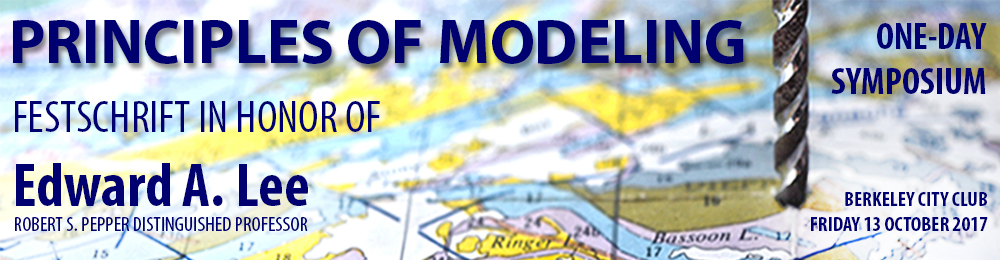

The Edward A. Lee Festschrift Symposium will be held on Friday October 13, 2017 in Berkeley, California at the Berkeley City Club. This day-long symposium is to celebrate the scholarship and teaching of Edward A. Lee, the Robert S. Pepper Distinguished Professor in Electrical Engineering and Computer Science at the University of California at Berkeley.

The theme of the symposium is "Principles of Modeling," as Edward has long been devoted to research that centers on the role of models, and is a fervent advocate of a principled use of models in science and engineering. Edward is interested in the use and limitations of models, their formal properties, their role in cognition and interplay with creativity, and, finally, their relationship with reality and physics. He warns not to "confuse the map with the territory" and cautions that "all models are wrong," but identifies tremendous value in the use of models, given that they provide useful abstractions. He also emphasizes that, for engineers, modeling is a "two-way street," as they can, unlike scientists, manipulate both the model and the thing being modeled. Edward's research covers a broad range of topics, among which are: determinism, time, concurrency, cyber-physical systems, and signal processing.
The symposium is dedicated to Edward's lifelong ideas and influences, and some of Edward's closest collaborators and most prominent colleagues will be delivering talks during the event. They have also been invited to contribute a paper to a so-called Festschrift, which will be published by Springer in their Lecture Notes in Computer Science (LNCS) series. The term "Festschrift" is borrowed from German, and could be translated as celebration publication or celebratory (piece of) writing (literally 'party-writing'; cognate with 'feast-script'). Sometimes, the Latin term liber amicorum (literally: "book of friends") is used for a Festschrift (Wikipedia).
To attend the event, please register here. Please note that this event is invitation-based. If you would like to attend the event but have not received an invitation, then please contact cxh@eecs dot berkeley dot edu.
The program is still under construction. Updates will be posted here and announced to registered attendees.
This special one-time event replaces the Ptolemy Miniconference that was originally scheduled to take place this year on October 13. Regular attendees of the Biennial Ptolemy Miniconference are welcome to attend the Festschrift Symposium instead.
Please direct questions to cxh@eecs dot berkeley dot edu.